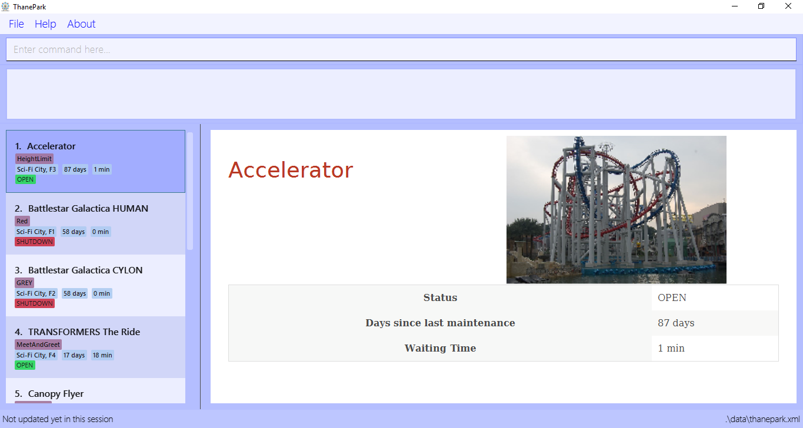

By: CS2103-AY1819S1-W14-2 Since: Sep 2018 Licence: MIT
1. Introduction
Welcome to ThanePark! ThanePark is a theme park management application that assists theme park managers and operators in obtaining ride information readily. Using the keyboard, you can easily access features such as creating rides, updating ride information, finding rides with short waiting time and more.
Get started now by heading over to Section 3, “Quick Start”. Enjoy!
2. About
This user guide introduces you to ThanePark, provides detailed instructions to set up and gives you an overview of the available features. No prior technical knowledge is required to use ThanePark.
For frequently asked questions, check out Section 5, “FAQ”.
For a brief summary of all features, check out Section 6, “Command Summary”.
3. Quick Start
Steps to set up ThanePark:
-
Check that you have Java version
9or later installed in your Computer. -
Download the latest
thanepark.jarhere. -
Copy the file to the folder you want to use as the home folder for your ThanePark.
-
Double-click the file to start the app. The GUI should appear in a few seconds.

Congratulations! You have successfully set up ThanePark!
Type the command in the command box and press Enter to execute it.
e.g. typing help and pressing Enter will open the help window.
Type some of these commands to try out ThanePark:
-
viewall: lists all rides in your theme park. -
exit: exits the app.
Refer to Section 4, “Features” for details of each command.
4. Features
This section contains information of all commands used in ThanePark.
Command Format
-
Items in chevrons
<>denotes compulsory field.
Example:add <attraction><maintenance><waitTime><address> -
Items in square brackets
[]denotes optional field.
Example:help [more] -
Items in curly brackets
{}denotes keystroke.
Example:{tab}is the TAB keystroke. -
Items ending with ellipses
…denotes variable number of arguments.
Example:history [findargs…] -
Parameters can be in any order
Example: if the command specifies n/name p/address, p/address n/name is also acceptable.
4.1. Manage commands
This section contains all commands related to managing commands.
4.1.1. Viewing help: help
Display short summary of important commands.
Format: help [option]
Displays a full list of important commands with a more detailed description if more is supplied as an option. If a specific command is supplied as option, show
greater detail of the specified command. If invalid option is specified, will show default help message.
4.1.2. Viewing history of previous commands: history
Display previous commands during this session. Inputted
commands from the past are logged into the system.
Format: history
4.1.3. Undoing commands: undo
Undo previous command during current session.
Format: undo
Examples:
-
delete 1
list
undo(reverses thedelete 1command) -
select 1
list
undo
Theundocommand fails as there are no undoable commands executed previously. -
delete 1
clear
undo(reverses theclearcommand)
undo(reverses thedelete 1command)
4.1.4. Redoing previously undone commands: redo
Reverse the previously undone commands during current session.
Format: redo
Examples:
-
delete 1
undo(reverses thedelete 1command)
redo(reapplies thedelete 1command) -
delete 1
redo
Theredocommand fails as there are noundocommands executed previously. -
delete 1
clear
undo(reverses theclearcommand)
undo(reverses thedelete 1command)
redo(reapplies thedelete 1command)
redo(reapplies theclearcommand)
4.1.5. Suggesting commands: {tab}
Non-tech savvy users wouldn’t need to remember commands and can
just use tab s to complete their sentences, or get suggestions on what
commands start with their specified prefix.
Format: {tab}
4.1.6. Clearing all entries : clear
Clears all entries from the address book.
Format: clear
4.1.7. Exiting ThanePark: exit
Exits the ThanePark application.
Format: exit
4.2. Manage input/output of attractions
This section contains all commands related to managing attractions.
4.2.1. Adding attractions: add
Add an attraction by name with the information.
Format: add <attraction> <maintenance> <waitTime> <address> [tag(s)]
A ride can have any number of tags (including 0).
Examples:
-
add n/Transformers m/1 w/30 a/John street, block 123, #01-01
-
add n/The Mummy m/3 w/45 a/311, Clementi Ave 2, #02-25 t/3D t/indoor
4.2.2. Deleting attractions: delete
Deletes the specified attraction from the ThanePark.
Format: delete <index>
-
Deletes the ride at the specified index.
-
The index refers to the index number shown in the list of displayed rides.
-
The index must be a positive integer 1, 2, 3, …
Examples:
-
viewall
delete 2
Deletes the 2nd ride in ThanePark. -
find Puss in Boots' Giant Journey
delete 1
Deletes the 1st ride in the results of the find command.
4.2.3. Updating information of attraction: update
Updates the information <tag> with <value> about the ride with <name>.
Format: update <index> <tag> <value>
4.2.4. Shutting down attraction: shutdown
Close the ride for the day. Display statistics for the ride on that day.
Format: shutdown <index>
4.2.5. Opening attraction: open
Open the ride for the day. Display statistics for the ride on that day.
Format: open <index>
4.3. View information on the list of rides
This section contains all commands related to viewing list on rides.
4.3.1. Viewing all available rides: viewall
Display all available rides in a list.
Format: viewall
4.3.2. Viewing detailed information of a specific ride: view
Display all available information about a single ride on the list of displayed rides.
index field specifies the index of the ride that the user wants to view.
Format: view <index>
The range of index should be between one and one million.
|
4.3.3. Viewing rides by their status: viewstatus
Display all rides according to the status of the rides.
Format: viewstatus <status>
| There are only three statuses that are valid, namely open, shutdown and maintenance. |
4.4. Find the relevant list of rides
This section contains all commands related to finding rides that is relevant to you.
4.4.1. Finding rides that fits the given condition: filter
Display all rides that fits the condition in a table. It can only filter conditions that have numeric values i.e.
Maintenance and WaitTime.
Format: filter <tag> <condition> [[tag] [condition]…]
Can include more conditions as desired.
Example:
-
filter w/ < 10
Filters attractions with waiting time less than 500 minutes. If no changes were made to your application (i.e. no delete, add commands were done), your window should look like this:

-
filter w/ < 10 m/ > 50
Filters attractions with waiting time less than 500 and maintenance of more than 50 days.

4.4.2. Finding a particular attraction: find
Find the rides that the user needs to check on. Case insensitive.
Can only find the name, the address, and the tags of the attractions.
Format: find <[name] [[tag][keyword]…]>
Must include arguments when finding.
Here are some examples with images to let you follow along.
Examples:
-
find accelerator
Finds and displays the list of attractions in ThanePark with the name "accelerator".

-
find a/ street
Finds and displays the list of attractions with addresses that contain the word "street".
-
find address street t/friends tag family
Finds and displays the list of attractions with addresses that contain the word "street" and the tags "friends" and "family"
5. FAQ
Q: How do I transfer my data to another Computer?
A: Install the app in the other computer and overwrite the empty data file it creates with the file that contains the data of your previous ThanePark folder.
6. Command Summary
The following table summarizes all commands available in ThanePark:
| Command | Format | Example |
|---|---|---|
Add ride |
add <name of ride> <days since last maintenance> <waiting time> <address> [tag…] |
add n/Mummy m/3 w/45 a/Lost World t/3D t/indoor |
Clear table |
clear |
clear |
Delete ride |
delete <index> |
delete 2 |
Exit ThanePark |
exit |
exit |
Filter rides |
filter <tag header> <condition> |
filter m/ > 3 w/ < 60 |
Find rides |
find <name of ride> OR find <tag header> <address> |
find Mummy OR find a/ Mum |
Help |
help [option] |
help more |
History of commands |
history |
history |
Open ride |
open <index> |
open 3 |
Redo command |
redo |
redo |
Shutdown ride |
shutdown <index> |
shutdown 1 |
Undo command |
undo |
undo |
Update ride information |
update <index> <tag header> <new value> |
update 2 a/ home |
View ride information |
view <index> |
view 2 |
View all rides |
viewall |
viewall |
View rides by status |
viewstatus <status> |
viewstatus open |